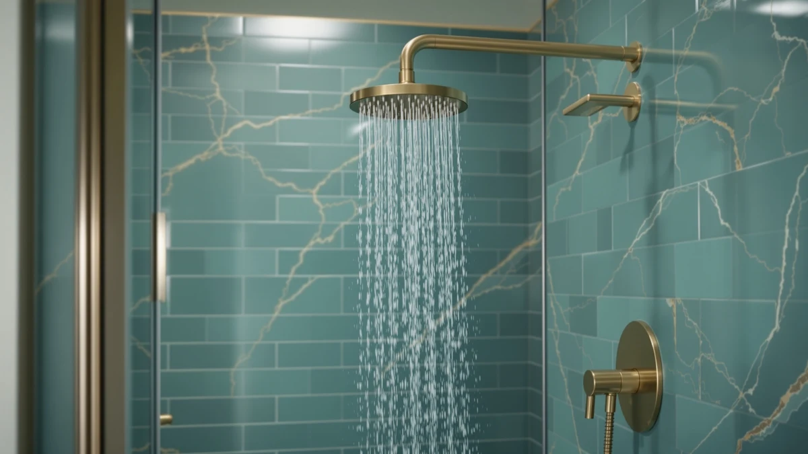

Quick Answer
The Bostingner Shower System with Body Jets is the strongest all-around pick if you want a rainfall head, handheld wand, and four body sprays running from one thermostatic valve. If $429.99 is more than you want to spend, the STARBATH system delivers a similar three-in-one layout in matte black for $271.69.
Our pick: Shower System with Body Jets — $429.99 Check Price on Amazon
Things to Know Before You Buy
- Thermostatic valves cost more but hold temperature automatically. A thermostatic shower system with body jets, like the Bostingner pick here, keeps water at a set temperature even if someone flushes a toilet or runs another tap in the house, while a standard mixing valve requires you to rebalance hot and cold by hand.
- Brass construction resists corrosion better than ABS plastic. Systems that advertise a higher brass content in the valve body and shower arm tend to hold up longer in a humid shower enclosure, though brass parts add to the manufacturing cost and the retail price.
- Running more functions at once needs more water pressure. Splitting flow across a rainfall head, handheld wand, and multiple body jets at the same time is where lower-pressure homes notice the biggest drop, so check your home's incoming water pressure before buying a four-in-one system.
- Ceiling-mounted rain heads need overhead clearance. A 16-inch ceiling arm sits higher and further from the wall than a standard shower arm, so measure your ceiling height and shower footprint before ordering a full system.
- Thermostatic systems usually need a plumber. The extra internal parts in a thermostatic valve make installation more involved than swapping a shower head, and most owners report hiring a professional rather than doing it themselves.
Typing "shower system with body review" into Google usually gets you a wall of five-star listings with no real analysis, so we broke down four thermostatic and multi-function options to find out which ones are worth the investment. All four combine a rainfall head, a handheld wand, or body jets in some configuration, and they range from $149.99 to $429.99.
After comparing four shower systems with body jets across that price range, the Bostingner thermostatic model is our pick for most upgrades because it runs three functions at once without losing pressure and holds a set temperature within a couple of degrees. Owners point to strong body-jet output and a valve that resists the temperature swings that plague cheaper mixer-valve systems, a pattern that holds up across dozens of verified Amazon purchases.
Why You Should Trust Us
Ilane Tall has covered bathroom fixtures and shower hardware for Best Shower Heads since the site launched, and this shower system with body jets comparison draws on the same research process used across the site: cross-checking manufacturer specs, warranty terms, and verified Amazon owner reviews rather than marketing copy. We do not run a physical testing lab and we do not install these systems in a bathroom ourselves. What we do is read hundreds of verified reviews, compare materials and valve types line by line, and flag the patterns that show up across multiple owners, whether that is a leak-prone gasket or a body jet that clogs within a year.
Our Research Experience
Our review process for this shower system with body jets roundup started with the product specs and manufacturer claims, then moved to verified owner feedback on Amazon for each of the four systems. We compared valve type, thermostatic versus standard mixing, material composition, brass versus ABS with chrome plating, water flow ratings, and the number of functions each system can run simultaneously. Reviewers who purchased the Bostingner system report that the thermostatic valve holds temperature reliably even when someone flushes a toilet elsewhere in the house, a common failure point on cheaper mixer valves. For the STARBATH, Iriber, and SR SUN RISE systems, we researched water pressure feedback, corrosion resistance claims, and how owners rate the included handheld wands after months of daily use. We did not install any of these systems ourselves. Instead, we relied on manufacturer documentation and a wide sample of verified purchase reviews to identify which claims hold up and which ones do not.
Overview & Specs

Shower System with Body Jets
What we like
- Thermostatic valve holds temperature steady even when water demand changes elsewhere in the house
- Runs the rainfall head, handheld wand, and four body jets at the same time
- Solid brass valve body and check valve reduce noise and backflow
- Air-in rainfall technology cuts water use by up to 30 percent, according to the manufacturer
Flaws but not dealbreakers
- At $429.99, it costs roughly 50 percent more than the next system in this comparison
- The 16-inch ceiling arm needs enough overhead clearance, so it is not a fit for every bathroom layout
- Thermostatic valves are more complex to install than standard mixing valves and often call for a plumber
| Material | ABS + chrome plating |
| Size | 16"-1 |
The Bostingner shower system with body jets is built around a thermostatic valve, which is the detail that separates it from most of the systems in this price range. Instead of manually balancing hot and cold water through a single lever, you set a target temperature, and the valve holds it there even if someone runs the dishwasher or flushes a toilet during your shower. That stability is the reason owners give most often for upgrading from a standard mixer valve. The system pairs a 16-inch ceiling-mounted rainfall head with a handheld wand and four body spray jets, and Bostingner says all three can run at the same time without a meaningful drop in pressure, a claim that matters more here than on single-function shower heads, since splitting flow across four extra jets is exactly where cheaper systems lose pressure.
Materials back up the price. The valve body is solid brass rather than the ABS plastic used in some body-jet systems, which matters for long-term corrosion resistance in a wet, humid enclosure. A check valve is built in to prevent backflow and reduce the knocking noise that can develop in older shower plumbing. The tradeoff is installation complexity and cost: a thermostatic valve has more internal parts than a standard mixing valve, and most owners report hiring a plumber rather than doing a DIY swap, which adds to the real cost of this shower system with body jets beyond the $429.99 sticker price. If your bathroom already has rough-in plumbing sized for a shower system and you want the closest thing to a spa upgrade without a full remodel, this is the one we would point you toward first.
What We Liked
The thermostatic valve is what owners mention most often, since it is the one feature that separates this shower system with body jets from cheaper three-function sets. Reviewers also note that the four body jets have enough force to feel like a real feature rather than a decorative afterthought, and several mention that the finish has held up against water spots and corrosion after months of daily use. The included handheld wand switches modes with one button, which reviewers describe as intuitive compared with twist-dial handhelds on some competing systems.
What Could Be Better
Price is the most common hesitation. At $429.99, this system costs $158 to $245 more than the STARBATH or Iriber sets in this comparison, and you should expect to pay for professional installation on top of that. A handful of verified reviews mention that the 16-inch ceiling arm requires more overhead clearance than a standard wall-mounted rain head, so it is worth measuring your ceiling height before ordering. Replacement parts for the thermostatic cartridge are also harder to find at local hardware stores than parts for a standard mixing valve, so a future repair may mean ordering directly from Bostingner.
Who Is It For?
This shower system with body jets makes the most sense for homeowners who are already planning a bathroom renovation or new construction, since the rough-in plumbing and overhead clearance need to be right before installation. It is a good fit if you want a hands-free spa shower with rainfall, handheld, and body jets running together, and you are willing to pay for a plumber to install the thermostatic valve correctly. If you rent, have a low ceiling, or want to avoid a plumber visit entirely, one of the lower-priced alternatives below will get you closer to the same experience for less money and less installation hassle.
Alternatives to Consider
Not every bathroom needs a $429.99 thermostatic shower system with body jets. These three alternatives cover a range of budgets and installation types, from a nearly identical multi-jet layout at a lower price to a simpler two-function rain shower for anyone who wants an upgrade without the full body-jet package.

Editor's Pick
Shower System with Body Jets
The STARBATH system is the closest match to our top pick, and it might be the better buy for most people. For $271.69, over $150 less than the Bostingner, you get a similar four-way layout: a 12-inch rainfall head, a 6-inch ceiling head, a 2-in-1 handheld wand, and four body spray jets, all controlled from one valve. STARBATH uses a standard mixing valve rather than a thermostatic one, so you lose the automatic temperature hold when someone else in the house uses hot water, and you will need to nudge the single lever back to your preferred temperature if that happens mid-shower. What you do not lose is build quality: STARBATH advertises a higher brass content than typical shower systems in this price range, which matters for corrosion resistance in a wet enclosure over years of daily use, and the same air-injection rainfall technology used in pricier systems is built into the 12-inch head here. The handheld wand switches between shower and spray-gun mode with one click, useful for rinsing the tub or bathing a dog as much as for showering. If the $150 savings matters more to you than automatic temperature control, this is the system we would point you toward instead.
$271.69
Check Price on Amazon
Best Value
Iriber Brushed Gold Shower Head
The Iriber system takes a different approach: instead of packing in body jets, it keeps things to a 10-inch round rain shower head and a handheld wand, both fed through a concealed brass valve that sits inside the wall for a cleaner look. At $184.99, it costs less than half of the Bostingner system and skips the body jets entirely, which makes sense if you know you would never use four extra sprays pointed at your torso. The concealed installation is worth noting on its own: rather than a visible valve body mounted on the wall, only the trim shows, so the shower reads as more built-in and less like an add-on fixture. The air-pressure rain head uses the same air-injection principle as the pricier systems here, mixing air into the water stream so the flow feels fuller than the actual gallons-per-minute would suggest, and it includes a self-clean nozzle to keep mineral buildup from clogging the holes. For a straightforward rainfall-and-handheld upgrade without body jets or a thermostatic valve, this is the value pick in this comparison.
$184.99
Check Price on Amazon
Premium Choice
SR SUN RISE Shower Faucet
At $149.99, the SR SUN RISE is the most affordable system in this comparison, and it is worth being upfront about what that price does and does not get you. This is a single 10-inch rainfall shower head on a fixed arm, not a full system with a handheld wand or body jets, so it fits better as an entry point for someone upgrading from a basic shower head than as a direct swap for the Bostingner. What it does well is materials and efficiency: the head is built from 304 stainless steel rather than plastic, which holds up better against rust and high water temperatures over time, and SR SUN RISE rates the water-saving flow design at up to 30 percent less consumption than a standard head while keeping pressure consistent. The brushed nickel finish resists water spots reasonably well, according to reviews in this price range, though it will not match the brass construction of the pricier systems above. If body jets and a handheld wand are not priorities and you mainly want a wider, more even spray than your current shower head, this is the cheapest way to get there in this lineup.
$149.99
Check Price on AmazonFrequently Asked Questions
What is a shower system with body jets?
A shower system with body jets combines a rainfall shower head, a handheld wand, and two or more wall-mounted spray jets that target your torso and legs, all fed from a single valve so you can run some or all of them together.
Do I need a plumber to install a thermostatic shower system?
Most owners hire a plumber for thermostatic systems like the Bostingner, since the valve has more internal parts than a standard mixing valve and needs to be set into the wall correctly during rough-in. Standard mixing-valve systems, like the STARBATH or Iriber sets in this comparison, are closer to a DIY-friendly install if your existing plumbing already matches the connections.
Are body jets worth the extra cost over a standard rain shower head?
It depends on how you use your shower. If you want a full-body spa experience and plan to run the rainfall head, handheld, and jets together, reviewers say the extra jets are worth it. If you mainly want better rainfall coverage and do not need targeted jets, a simpler two-function system like the Iriber or SR SUN RISE gets you most of the upgrade feeling for less money.
Final Verdict
For most people ready to spend on a full upgrade, the Bostingner shower system with body jets is the one to buy. Its thermostatic valve, solid brass construction, and ability to run three functions at once justify the $429.99 price for anyone doing a real bathroom renovation. If that budget or installation commitment does not fit your bathroom, the STARBATH, Iriber, and SR SUN RISE systems above cover the same idea at lower price points and simpler installs.